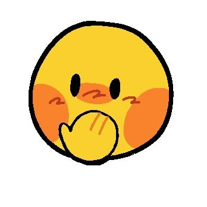
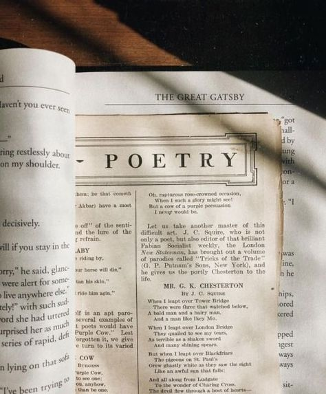
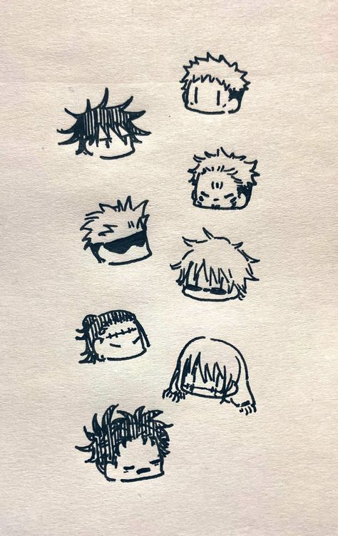
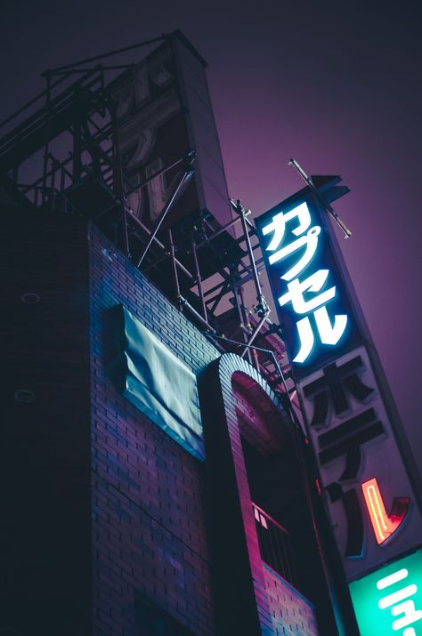

Why love "Arts"?
Humans are curious species who seek entertainment, many found in "arts", which also serves as a therapeutic relief when one is stressed. Life can be overwhelming so filling your activity time with hobbies art-related can help improve your mood and self confidence. Here's a list of hobbies you could try out and that personally I plan to inmerse myself more often.
1. Poetry
Poetry is a good hobby since it can be an outlet for your emotions, plus it allows you to do it in a creative way using figurative speech or literal speech, whatever you choose; and the best part is there's not a dictated way to do it, so that's quite comforting to know.
2. Drawing
Drawing is a great way to portray your imagination and feelings in paper and colors. Many enjoy drawing their favorite characters and if you acquire this skill you migth be able to branch out in many other areas, like animation, graphic designing, you name it. Plus who knows perhaps your drawings become famous like Picasso.
3. Video Editing
If you're a comedic person like me, then perhaps you'll be interested in video editing. Many enjoy a good video edited with humorous memes, that can ligthen ones mood.
4. Photography
Photography is the art of capturing a moment in a picture, which makes us reminiscent of that special moment. You can take pictures of your animals, family, rocks, whatever comes your way!
Random facts
- My favorite color is green!!!!
- The human body contains about 0.2 milligrams of gold, which is mostly in our blood.
- Through a scientific process called high-pressure high-temperature synthesis, peanut butter can be transformed into tiny, artificial diamonds.
- The dot over the small letter 'i' is called a tittle.
- Tiramisu translates to ‘take me to heaven’ in Italian
Games OST
Music comes in various formats, one of these are "G A M E S", which are a form of entertainment, so If you want to see how music and games creates the powerduo everyone likes maybe you should come around and see how music gives a special meaning to games.
Previous Page